<title>Patterns, Effects and Themes</title>
<meta name="claude:viewport-fit-sides" content="cover" />
<link rel="preconnect" href="https://fonts.googleapis.com" />
<link
  href="https://fonts.googleapis.com/css2?family=IBM+Plex+Sans:wght@400;500;600&family=IBM+Plex+Mono:wght@400;500&family=Fraunces:opsz,wght@9..144,600&display=swap"
  rel="stylesheet"
/>
<script src="https://cdnjs.cloudflare.com/ajax/libs/highlight.js/11.9.0/highlight.min.js"></script>
<script src="https://cdnjs.cloudflare.com/ajax/libs/highlight.js/11.9.0/languages/python.min.js"></script>
<style>
  :root {
    /* Layout idea: a spec gallery in five tabs. Each card is picture, proposed code, then today's code. */
    --bg: #f6f7f9;
    --panel: #ffffff;
    --ink: #1d2330;
    --muted: #5b6475;
    --line: #dfe3ea;
    --accent: #2f5fb3;
    --code-bg: #f1f3f7;
    --kw: #8a3ab9;
    --str: #1f7a3a;
    --num: #b5530b;
    --com: #7b8494;
    --display: "Fraunces", Georgia, serif;
    --body: "IBM Plex Sans", "Helvetica Neue", Arial, sans-serif;
    --mono: "IBM Plex Mono", ui-monospace, Menlo, monospace;
  }
  @media (prefers-color-scheme: dark) {
    :root:not([data-theme="light"]) {
      --bg: #14171d;
      --panel: #1c2029;
      --ink: #e6e9ef;
      --muted: #9aa3b4;
      --line: #2e3442;
      --accent: #8db3ff;
      --code-bg: #232835;
      --kw: #d3a6ff;
      --str: #8fd9a0;
      --num: #ffb37a;
      --com: #8590a3;
      color-scheme: dark;
    }
  }
  :root[data-theme="dark"] {
    --bg: #14171d;
    --panel: #1c2029;
    --ink: #e6e9ef;
    --muted: #9aa3b4;
    --line: #2e3442;
    --accent: #8db3ff;
    --code-bg: #232835;
    --kw: #d3a6ff;
    --str: #8fd9a0;
    --num: #ffb37a;
    --com: #8590a3;
    color-scheme: dark;
  }
  * {
    box-sizing: border-box;
  }
  body {
    margin: 0;
    background: var(--bg);
    color: var(--ink);
    font: 15px/1.55 var(--body);
  }
  main {
    max-width: 1180px;
    margin: 0 auto;
    padding-block: 28px 80px;
    padding-left: max(16px, env(safe-area-inset-left, 0px));
    padding-right: max(16px, env(safe-area-inset-right, 0px));
    display: grid;
    gap: 24px;
  }
  h1 {
    font: 600 34px/1.15 var(--display);
    margin: 0;
    text-wrap: balance;
  }
  h2 {
    font: 600 24px/1.2 var(--display);
    margin: 10px 0 0;
    text-wrap: balance;
  }
  h3 {
    font: 600 17px/1.3 var(--body);
    margin: 0;
    text-wrap: balance;
  }
  p,
  li {
    max-width: 74ch;
  }
  p {
    margin: 0;
  }
  a {
    color: var(--accent);
  }
  ul,
  ol {
    margin: 0;
    padding-left: 22px;
    display: grid;
    gap: 5px;
  }
  code {
    font: 13px/1.5 var(--mono);
    background: var(--code-bg);
    padding: 1px 4px;
    border-radius: 4px;
  }
  pre {
    margin: 0;
    overflow-x: auto;
    background: var(--code-bg);
    border-radius: 6px;
    padding: 12px 14px;
    min-width: 0;
  }
  pre code {
    background: none;
    padding: 0;
    font-size: 12.5px;
    display: block;
    white-space: pre;
  }
  .hljs-keyword,
  .hljs-built_in,
  .hljs-literal {
    color: var(--kw);
  }
  .hljs-string {
    color: var(--str);
  }
  .hljs-number {
    color: var(--num);
  }
  .hljs-comment {
    color: var(--com);
    font-style: italic;
  }
  .hljs-title,
  .hljs-attr,
  .hljs-property {
    color: var(--ink);
    font-weight: 500;
  }
  .lede {
    display: grid;
    gap: 10px;
  }
  .note {
    font-size: 13.5px;
    color: var(--muted);
  }
  .summary {
    background: var(--panel);
    border: 1px solid var(--line);
    border-left: 4px solid var(--accent);
    border-radius: 8px;
    padding: 16px 20px;
    display: grid;
    gap: 8px;
  }
  nav.tabs {
    display: flex;
    flex-wrap: wrap;
    gap: 6px;
    border-bottom: 1px solid var(--line);
    padding-bottom: 8px;
  }
  nav.tabs a {
    font: 500 14px/1 var(--body);
    text-decoration: none;
    color: var(--muted);
    padding: 9px 13px;
    border-radius: 6px;
  }
  nav.tabs a[aria-current="page"] {
    background: var(--panel);
    color: var(--ink);
    box-shadow: inset 0 0 0 1px var(--line);
  }
  nav.tabs a:focus-visible,
  summary:focus-visible,
  a:focus-visible {
    outline: 2px solid var(--accent);
    outline-offset: 2px;
  }
  section.tab {
    display: grid;
    gap: 22px;
    min-width: 0;
  }
  .card {
    background: var(--panel);
    border: 1px solid var(--line);
    border-radius: 8px;
    padding: 18px;
    display: grid;
    gap: 14px;
    min-width: 0;
  }
  .card.fork {
    border-left: 4px solid var(--num);
  }
  .pics {
    display: grid;
    grid-template-columns: repeat(auto-fit, minmax(260px, 1fr));
    gap: 14px;
    align-items: start;
  }
  figure {
    margin: 0;
    display: grid;
    gap: 6px;
    align-content: start;
    min-width: 0;
  }
  figure img {
    max-width: 100%;
    height: auto;
    border: 1px solid var(--line);
    border-radius: 6px;
    background: #fff;
    justify-self: start;
  }
  figure img.narrow {
    max-width: min(100%, 320px);
  }
  figure img.mid {
    max-width: min(100%, 520px);
  }
  figcaption {
    font-size: 13px;
    color: var(--muted);
  }
  .codes {
    display: grid;
    grid-template-columns: repeat(auto-fit, minmax(320px, 1fr));
    gap: 12px;
  }
  .codes > div {
    min-width: 0;
  }
  .label {
    font: 600 12px/1 var(--body);
    color: var(--muted);
    text-transform: uppercase;
    letter-spacing: 0.05em;
    margin-bottom: 6px;
  }
  .label.pick {
    color: var(--str);
  }
  .label.alt {
    color: var(--num);
  }
  details {
    border-top: 1px solid var(--line);
    padding-top: 10px;
  }
  details > *:not(summary) {
    margin-top: 10px;
  }
  summary {
    cursor: pointer;
    color: var(--muted);
    font-size: 13.5px;
  }
  table {
    border-collapse: collapse;
    width: 100%;
    font-size: 14px;
  }
  th,
  td {
    text-align: left;
    vertical-align: top;
    padding: 8px 10px;
    border-bottom: 1px solid var(--line);
  }
  th {
    font-weight: 600;
    color: var(--muted);
    font-size: 12.5px;
    text-transform: uppercase;
    letter-spacing: 0.04em;
  }
  .tablewrap {
    overflow-x: auto;
  }
  .tag {
    display: inline-block;
    font: 500 11px/1 var(--body);
    letter-spacing: 0.04em;
    text-transform: uppercase;
    padding: 4px 7px;
    border-radius: 4px;
    border: 1px solid var(--line);
    color: var(--muted);
  }
</style>

<main>
  <header class="lede">
    <span class="tag">GoFish API proposal, Nov 22, 2026</span>
    <h1>Patterns, Effects and Themes</h1>
    <p class="note">
      For
      <a href="https://github.com/gofish-graphics/gofish-graphics/issues/1396"
        >#1396</a
      >
      (themes and textures),
      <a href="https://github.com/gofish-graphics/gofish-graphics/issues/222"
        >#222</a
      >
      (a theming context) and
      <a href="https://github.com/gofish-graphics/gofish-graphics/issues/1196"
        >#1196</a
      >
      (effects that keep the layout exact). Nothing here is implemented. GoFish
      drew every picture, using workarounds that exist today: hand-written SVG
      pattern and filter defs, and for the chrome, edits to the rendered SVG.
      The code beside each picture is the proposed spelling.
    </p>
  </header>

  <nav class="tabs" aria-label="Sections">
    <a href="#overview" data-tab="overview">Overview</a>
    <a href="#patterns" data-tab="patterns">Patterns</a>
    <a href="#effects" data-tab="effects">Effects</a>
    <a href="#themes" data-tab="themes">Themes</a>
    <a href="#background" data-tab="background">Background</a>
  </nav>

  <!-- ============================ OVERVIEW ============================ -->
  <section class="tab" id="tab-overview">
    <div class="summary">
      <p>
        <strong>A pattern is a paint.</strong> <code>fill</code> and
        <code>stroke</code> take <code>Pattern.lines()</code> the way they take
        a color, and a palette may hold patterns.
      </p>
      <p>
        <strong>An effect is a <code>Filter</code>.</strong> The family that
        exists gains <code>shadow</code>, <code>blur</code>,
        <code>roughen</code> and <code>grain</code>, and
        <code>filter</code> takes a list.
      </p>
      <p>
        <strong>A theme is default options.</strong> It is a plain object keyed
        by the mark or chrome part the options belong to, set on any
        <code>chart</code> or <code>layer</code> and inherited by everything
        inside.
      </p>
    </div>

    <article class="card">
      <h3>The request in #1396, and the same look as one theme</h3>
      <div class="pics">
        <figure>
          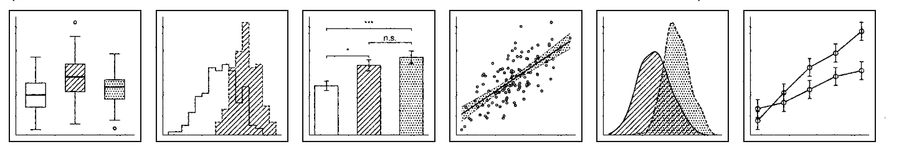
          <figcaption>
            The reference from the issue: Cogra, a matplotlib style that tells
            groups apart by hatching, not color.
          </figcaption>
        </figure>
      </div>
      <div class="pics">
        <figure>
          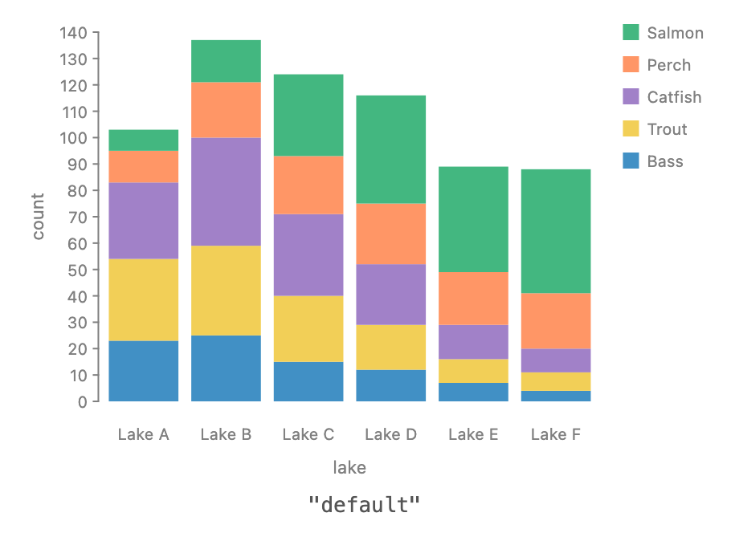
          <figcaption>No theme.</figcaption>
        </figure>
        <figure>
          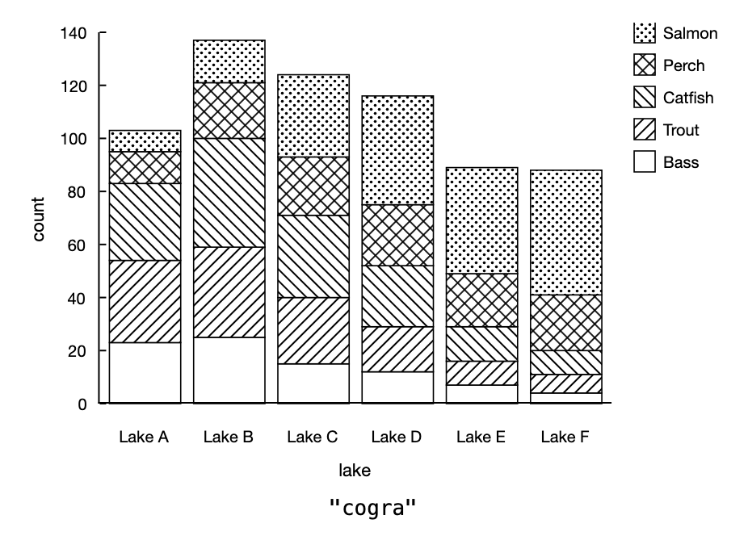
          <figcaption>
            <code>theme: cogra</code>. The chart's own code is unchanged.
          </figcaption>
        </figure>
      </div>
      <div class="codes">
        <div>
          <div class="label">Proposed, JavaScript</div>
          <pre><code class="language-javascript">const cogra = {
  color: {
    ink: "black",
    paper: "white",
    muted: "black",
    category: Color.palette([
      "white",
      Pattern.lines(),
      Pattern.lines({ angle: -45 }),
      Pattern.cross(),
      Pattern.dots(),
    ]),
  },
  text: { fontFamily: "Helvetica, Arial, sans-serif" },
  rect: { stroke: Color.ink, strokeWidth: 1 },
  axis: { line: true, tick: { side: "inside", every: 20 } },
  legend: { swatch: { size: 14, stroke: Color.ink } },
};

// The chart is the same in all four pictures. Only `theme` changes.
chart(seafood, { theme: cogra })
  .flow(spread({ by: "lake", dir: "x" }), stack({ by: "species", dir: "y" }))
  .mark(rect({ h: "count", fill: "species" }));</code></pre>
        </div>
        <div>
          <div class="label">Proposed, Python</div>
          <pre><code class="language-python">cogra = dict(
    color=dict(
        ink="black",
        paper="white",
        muted="black",
        category=Color.palette(
            [
                "white",
                Pattern.lines(),
                Pattern.lines(angle=-45),
                Pattern.cross(),
                Pattern.dots(),
            ]
        ),
    ),
    text=dict(font_family="Helvetica, Arial, sans-serif"),
    rect=dict(stroke=Color.ink, stroke_width=1),
    axis=dict(line=True, tick=dict(side="inside", every=20)),
    legend=dict(swatch=dict(size=14, stroke=Color.ink)),
)

(
    chart(seafood, theme=cogra)
    .flow(spread(by="lake", dir="x"), stack(by="species", dir="y"))
    .mark(rect(h="count", fill="species"))
)</code></pre>
        </div>
      </div>
      <p>
        Cogra turns out to be three separate things, and each one maps to one
        part of this proposal. A pattern per group in place of a color per group
        is a palette that holds patterns. Black ink, white fills, inward ticks
        and a font are a theme. The optional photocopy wear is an effect on the
        whole figure.
      </p>
    </article>

    <article class="card">
      <h3>What each part adds</h3>
      <div class="tablewrap">
        <table>
          <tr>
            <th>Part</th>
            <th>New</th>
            <th>Built from</th>
          </tr>
          <tr>
            <td>Patterns</td>
            <td>
              The <code>Pattern</code> family: <code>lines</code>,
              <code>cross</code>, <code>dots</code>, <code>solid</code>,
              <code>tile(node)</code>. <code>fill</code>,
              <code>stroke</code> and palettes accept one.
            </td>
            <td>
              A pattern fill is the tile repeated over the mark's box and kept
              where the mark is, which is <code>atop</code> today.
            </td>
          </tr>
          <tr>
            <td>Effects</td>
            <td>
              <code>Filter.shadow</code>, <code>Filter.blur</code>,
              <code>Filter.roughen</code>, <code>Filter.grain</code>.
              <code>filter</code> takes a list.
            </td>
            <td>
              The <code>filter</code> option that every mark and
              <code>layer</code> already has.
            </td>
          </tr>
          <tr>
            <td>Themes</td>
            <td>
              A <code>theme</code> option on <code>chart</code> and
              <code>layer</code>. Four role colors: <code>Color.ink</code>,
              <code>Color.paper</code>, <code>Color.accent</code>,
              <code>Color.muted</code>. Style options on axis and legend parts.
              An exported <code>defaultTheme</code>.
            </td>
            <td>
              The options each mark already has. A theme sets only the ones the
              user left out.
            </td>
          </tr>
        </table>
      </div>
      <p class="note">
        No new operator. Decided so far: a pattern is a paint, not a second
        option beside <code>fill</code> (Nov 22). Two places where I think the
        choice is close are marked with an orange edge on the Themes tab, each
        beside its example: keyed object or rule list, and the role colors.
      </p>
    </article>
  </section>

  <!-- ============================ PATTERNS ============================ -->
  <section class="tab" id="tab-patterns" hidden>
    <article class="card">
      <h3>The family</h3>
      <figure>
        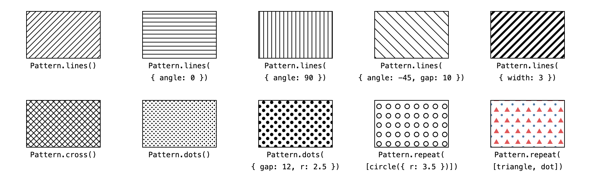
        <figcaption>
          Each swatch is a <code>rect</code> with that fill.
          <code>Pattern.tile</code> takes any GoFish node. The other members are
          named cases of it: <code>Pattern.lines()</code> is a tile that holds
          one line.
        </figcaption>
      </figure>
      <div class="codes">
        <div>
          <div class="label">Proposed, JavaScript</div>
          <pre><code class="language-javascript">rect({ h: "count", fill: Pattern.lines() });
rect({ h: "count", fill: Pattern.lines({ angle: 0, gap: 8, color: "species" }) });
rect({
  h: "count",
  fill: Pattern.tile(circle({ r: 3.5, fill: "none", stroke: Color.ink }), {
    spacing: 4,
  }),
});</code></pre>
        </div>
        <div>
          <div class="label">Proposed, Python</div>
          <pre><code class="language-python">rect(h="count", fill=Pattern.lines())
rect(h="count", fill=Pattern.lines(angle=0, gap=8, color="species"))
rect(
    h="count",
    fill=Pattern.tile(circle(r=3.5, fill="none", stroke=Color.ink), spacing=4),
)</code></pre>
        </div>
      </div>
      <div class="tablewrap">
        <table>
          <tr>
            <th>Member</th>
            <th>Options</th>
            <th>Draws</th>
          </tr>
          <tr>
            <td><code>Pattern.lines</code></td>
            <td>
              <code>angle</code> 45, <code>gap</code> 6, <code>width</code> 1
            </td>
            <td>parallel lines</td>
          </tr>
          <tr>
            <td><code>Pattern.cross</code></td>
            <td><code>angle</code>, <code>gap</code>, <code>width</code></td>
            <td>two sets of lines at right angles</td>
          </tr>
          <tr>
            <td><code>Pattern.dots</code></td>
            <td><code>gap</code> 6, <code>r</code> 1</td>
            <td>a grid of dots</td>
          </tr>
          <tr>
            <td><code>Pattern.solid</code></td>
            <td></td>
            <td>
              a flat fill, so a plain color can sit in a palette of patterns
            </td>
          </tr>
          <tr>
            <td><code>Pattern.tile(node)</code></td>
            <td><code>spacing</code></td>
            <td>that node, repeated</td>
          </tr>
        </table>
      </div>
      <p>
        Every member also takes <code>color</code> (default
        <code>Color.ink</code>; it may be a field, like any color) and
        <code>background</code> (default none). Lengths are pixels.
        <code>Pattern.lines</code> alone means <code>Pattern.lines()</code>, as
        in the other families.
      </p>
    </article>

    <article class="card">
      <h3>A palette may hold patterns</h3>
      <figure>
        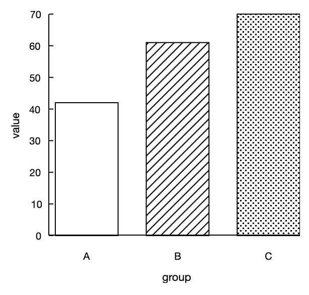
      </figure>
      <div class="codes">
        <div>
          <div class="label">Proposed, JavaScript</div>
          <pre><code class="language-javascript">chart(scores, {
  color: Color.palette(["white", Pattern.lines(), Pattern.dots()]),
})
  .flow(spread({ by: "group", dir: "x" }))
  .mark(rect({ h: "value", fill: "group", stroke: "black", strokeWidth: 1 }));</code></pre>
        </div>
        <div>
          <div class="label">Proposed, Python</div>
          <pre><code class="language-python">(
    chart(scores, color=Color.palette(["white", Pattern.lines(), Pattern.dots()]))
    .flow(spread(by="group", dir="x"))
    .mark(rect(h="value", fill="group", stroke="black", stroke_width=1))
)</code></pre>
        </div>
      </div>
      <p>
        The mark says <code>fill: "group"</code>, which means "tell the groups
        apart". The palette decides how. The legend draws each swatch with its
        paint, so there is no separate pattern legend.
      </p>
      <details>
        <summary>How this picture was made today</summary>
        <pre><code class="language-javascript">chart(scores, {
  color: Color.palette({ A: "url(#p-none)", B: "url(#p-lines)", C: "url(#p-dots)" }),
})
  .flow(spread({ by: "group", dir: "x" }))
  .mark(rect({ h: "value", fill: "group", stroke: "black", strokeWidth: 1 }))
  .render(container, {
    // JSX, so JavaScript only. One &lt;pattern&gt; per pattern and per color.
    defs: [solid("p-none", "white"), lines("p-lines"), dots("p-dots")],
  });
// The axes have no style options, so their color, font and ticks
// are edited in the rendered SVG afterwards.</code></pre>
      </details>
    </article>

    <article class="card">
      <h3>Hard example: color by one field, pattern by another</h3>
      <figure>
        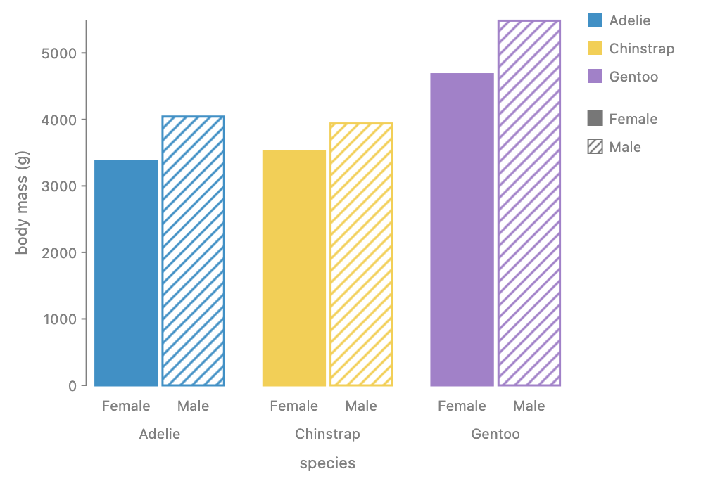
      </figure>
      <div class="codes">
        <div>
          <div class="label pick">Decided Nov 22: the pattern is the paint</div>
          <pre><code class="language-javascript">chart(penguinMeans, {
  color: {
    Sex: Color.palette({
      Female: Pattern.solid({ color: "species" }),
      Male: Pattern.lines({ color: "species" }),
    }),
  },
})
  .flow(spread({ by: "species", dir: "x" }), spread({ by: "sex", dir: "x" }))
  .mark(rect({ h: "body mass (g)", fill: "sex" }));</code></pre>
        </div>
        <div>
          <div class="label alt">Not chosen: a second option beside fill</div>
          <pre><code class="language-javascript">chart(penguinMeans, {
  pattern: { Sex: [Pattern.none, Pattern.lines] },
})
  .flow(spread({ by: "species", dir: "x" }), spread({ by: "sex", dir: "x" }))
  .mark(rect({ h: "body mass (g)", fill: "species", pattern: "sex" }));</code></pre>
        </div>
      </div>
      <p>
        The second form is the rough.js and ggpattern model, and it reads better
        on this one chart. Josh chose the paint model on Nov 22, for these
        reasons:
      </p>
      <ul>
        <li>
          Gradients and images have to be paints anyway. A separate
          <code>pattern</code> option would then cover part of the same ground
          as paints by another route.
        </li>
        <li>
          A second option needs its own ranges, its own legend, and a rule for
          merging that legend with the color legend. ggpattern has fifteen
          <code>pattern_*</code> aesthetics for this reason.
        </li>
        <li>
          With patterns in palettes, a theme can swap colors for patterns in a
          chart that only says <code>fill: "species"</code>. With a second
          option the chart would have had to say
          <code>pattern: "species"</code> in advance. This is the Cogra case,
          and the case of readers who cannot tell the hues apart.
        </li>
      </ul>
    </article>

    <article class="card">
      <h3>Marks that are not rectangles, and a polar chart</h3>
      <div class="pics">
        <figure>
          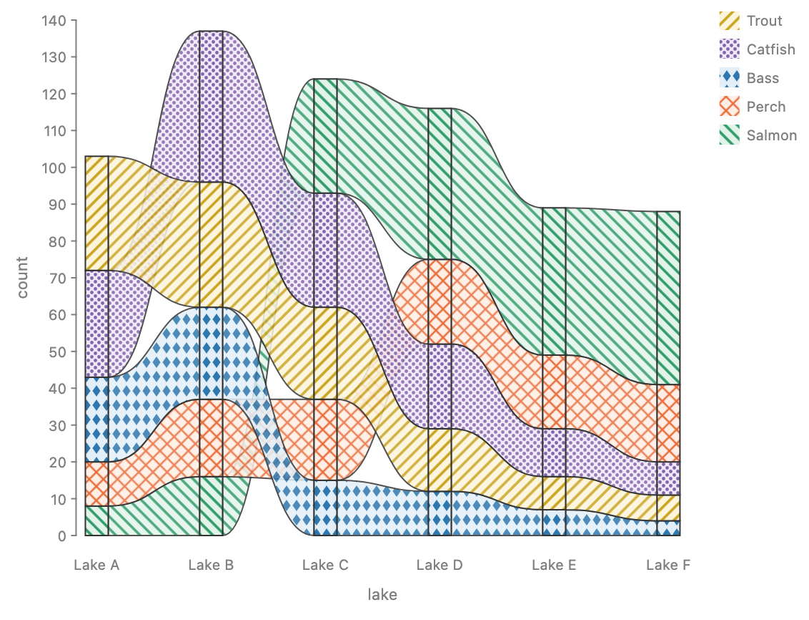
          <figcaption>
            The old <code>fishRibbonChartTextured</code> test, redrawn on
            today's API. The ribbons take their fill from the bars.
          </figcaption>
        </figure>
        <figure>
          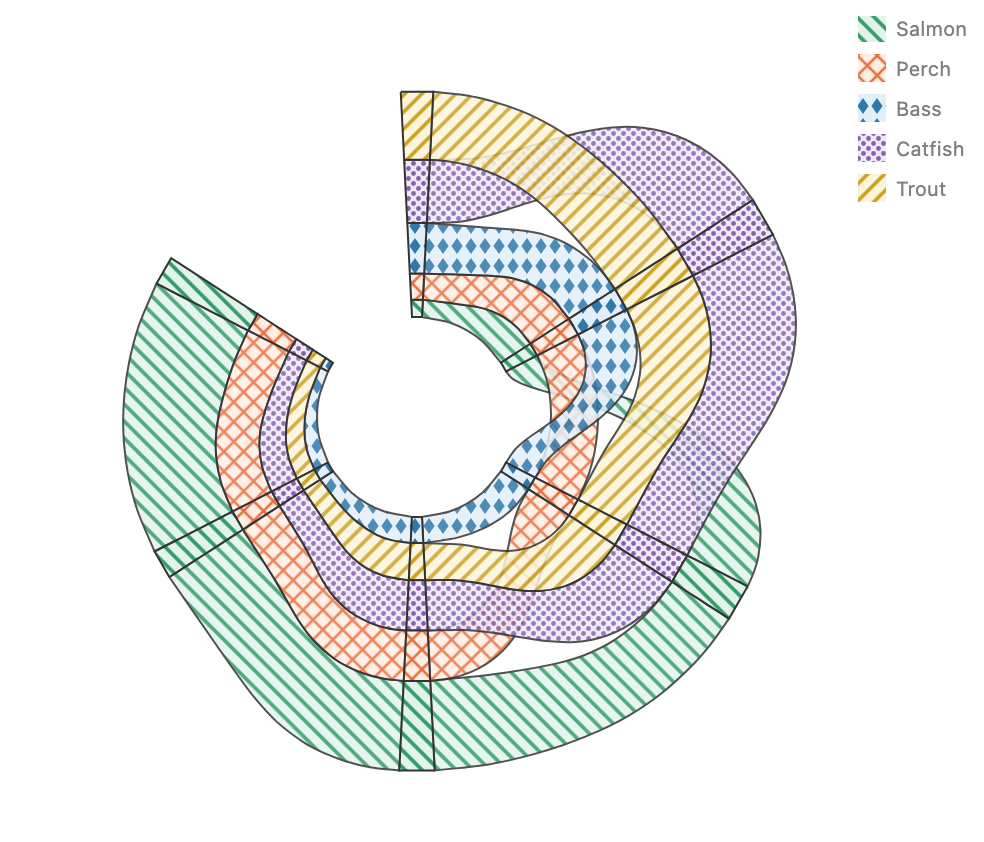
          <figcaption>
            In polar coordinates the hatch lines stay straight.
          </figcaption>
        </figure>
      </div>
      <pre><code class="language-javascript">chart(seafood, {
  color: Color.palette({
    Bass: Pattern.tile(diamond, { color: "#2f77b4", background: "#e3eef8" }),
    Trout: Pattern.lines({ color: "#c9a227", background: "#fbf3d5" }),
    Catfish: Pattern.dots({ color: "#7b5fb0", background: "#ece6f5" }),
    Perch: Pattern.cross({ color: "#f07a48", background: "#fde9df" }),
    Salmon: Pattern.lines({ angle: -45, color: "#2f9e6e", background: "#dff3ea" }),
  }),
})
  .flow(
    spread({ by: "lake", dir: "x", spacing: 64 }),
    stack({ by: field("species").sort("count"), dir: "y" }),
  )
  .mark(rect({ h: "count", fill: "species", stroke: "#333", strokeWidth: 1 }))
  .layer(ribbon({ opacity: 0.85, stroke: "#333", strokeWidth: 1 }));</code></pre>
      <ul>
        <li>
          <strong>A pattern is anchored to the page</strong>, not to each mark,
          so the lines run unbroken from a bar into its ribbon and across
          stacked segments.
        </li>
        <li>
          <strong>A coordinate transform does not bend a pattern.</strong> A
          paint is laid on after the shape is drawn.
        </li>
        <li>
          <strong>A label on a patterned mark</strong> picks its color against
          the pattern's <code>background</code>, or the paper when there is
          none. Today a <code>url(#...)</code> fill counts as no paint at all.
        </li>
        <li>
          <strong>Legend swatches need room.</strong> The 10 pixel swatch shows
          half a tile. A swatch with a pattern is drawn larger, outlined, and
          with the pattern anchored to the swatch.
        </li>
      </ul>
    </article>

    <article class="card">
      <h3>The name</h3>
      <p>
        <code>Pattern</code> is Figma's fill type, SVG's element and TikZ's key.
        "Texture" is Bertin's word in English and the word in the issue, but in
        Figma a Texture is an effect, and the recent papers by He and others use
        "pattern" for the fill. <code>Hatch</code> covers only lines. Typst
        renamed its <code>pattern</code> to <code>tiling</code> in 0.13.
      </p>
      <p>
        PR #1366 adds a rule that the option taking a family member has the
        family's name in lowercase. <code>fill: Pattern.lines()</code> departs
        from it in the way <code>fill: "red"</code> already does:
        <code>fill</code> takes a paint, and a color and a pattern are both
        paints. Held strictly, the rule gives <code>fill: Fill.lines()</code>,
        which reads worse on <code>stroke</code>.
      </p>
    </article>
  </section>

  <!-- ============================ EFFECTS ============================ -->
  <section class="tab" id="tab-effects" hidden>
    <article class="card">
      <h3>Four new members of the family that exists</h3>
      <figure>
        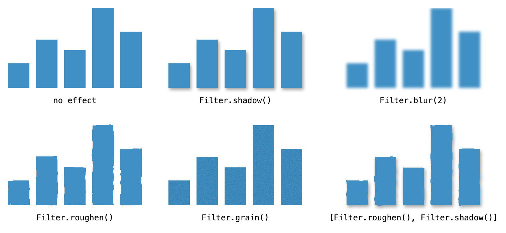
        <figcaption>
          The roughened bars keep their positions and heights.
        </figcaption>
      </figure>
      <div class="codes">
        <div>
          <div class="label">Proposed, JavaScript</div>
          <pre><code class="language-javascript">rect({ h: "value", filter: Filter.shadow() });
rect({ h: "value", filter: Filter.shadow({ y: 2, blur: 6, color: "#0004" }) });
rect({ h: "value", filter: [Filter.roughen(), Filter.shadow()] });</code></pre>
        </div>
        <div>
          <div class="label">Proposed, Python</div>
          <pre><code class="language-python">rect(h="value", filter=Filter.shadow())
rect(h="value", filter=Filter.shadow(y=2, blur=6, color="#0004"))
rect(h="value", filter=[Filter.roughen(), Filter.shadow()])</code></pre>
        </div>
      </div>
      <div class="tablewrap">
        <table>
          <tr>
            <th>Member</th>
            <th>Options</th>
            <th>Does</th>
          </tr>
          <tr>
            <td><code>Filter.shadow</code></td>
            <td>
              <code>x</code> 0, <code>y</code> 2, <code>blur</code> 4,
              <code>color</code>
            </td>
            <td>a drop shadow that follows the shape</td>
          </tr>
          <tr>
            <td><code>Filter.blur(radius)</code></td>
            <td></td>
            <td>a Gaussian blur</td>
          </tr>
          <tr>
            <td><code>Filter.roughen</code></td>
            <td>
              <code>amount</code> 2, <code>scale</code>, <code>seed</code>
            </td>
            <td>wobbles the edges, as a hand or a photocopier would</td>
          </tr>
          <tr>
            <td><code>Filter.grain</code></td>
            <td><code>amount</code>, <code>scale</code>, <code>seed</code></td>
            <td>paper grain inside the shape</td>
          </tr>
          <tr>
            <td>
              <code>Filter.grayscale</code>,
              <code>Filter.luminanceToAlpha</code>
            </td>
            <td></td>
            <td>on main today</td>
          </tr>
        </table>
      </div>
      <p>
        A list applies its members in order. The names are Figma's (Drop shadow,
        Layer blur, Noise) and Illustrator's (Roughen). If #1385 renames the
        family to <code>Effect</code>, these members move with it.
      </p>
    </article>

    <article class="card">
      <h3>A diagram, as it is today and drawn by hand</h3>
      <div class="pics">
        <figure>
          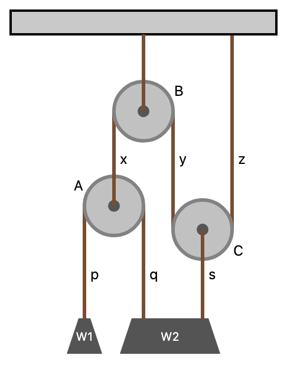
          <figcaption>The Bluefish pulley story today.</figcaption>
        </figure>
        <figure>
          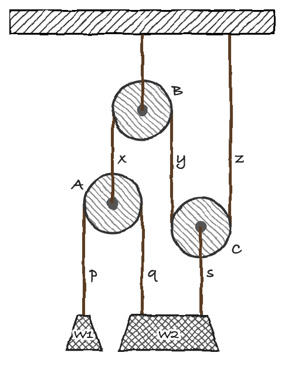
          <figcaption>
            The same diagram and the same layout, with a theme that sets
            patterns, <code>Filter.roughen()</code> and a font.
          </figcaption>
        </figure>
      </div>
      <div class="codes">
        <div>
          <div class="label">Proposed, JavaScript</div>
          <pre><code class="language-javascript">const sketch = {
  circle: { fill: Pattern.lines({ gap: 4 }), filter: Filter.roughen() },
  polygon: { fill: Pattern.cross({ gap: 5 }), filter: Filter.roughen() },
  rect: { fill: Pattern.lines({ gap: 7 }), filter: Filter.roughen() },
  line: { filter: Filter.roughen() },
  text: { fontFamily: "Bradley Hand, cursive" },
};

layer({ theme: sketch }, [pulley()]);</code></pre>
        </div>
        <div>
          <div class="label">Proposed, Python</div>
          <pre><code class="language-python">sketch = dict(
    circle=dict(fill=Pattern.lines(gap=4), filter=Filter.roughen()),
    polygon=dict(fill=Pattern.cross(gap=5), filter=Filter.roughen()),
    rect=dict(fill=Pattern.lines(gap=7), filter=Filter.roughen()),
    line=dict(filter=Filter.roughen()),
    text=dict(font_family="Bradley Hand, cursive"),
)

layer([pulley()], theme=sketch)</code></pre>
        </div>
      </div>
      <p>
        The pulley is built from user components made with
        <code>createMark</code>. The theme reaches the <code>circle</code>,
        <code>polygon</code> and <code>line</code> marks inside them without the
        components knowing about it.
      </p>
    </article>

    <article class="card">
      <h3>What this answers in #1196, and what it leaves</h3>
      <ul>
        <li>
          <strong>Where does an effect sit?</strong> On a mark, or on a
          <code>layer</code> for a whole subtree. There is no new place.
        </li>
        <li>
          <strong>Does the layout stay exact?</strong> Yes. An effect runs after
          layout and never changes a box.
        </li>
        <li>
          <strong>Is it repeatable in visual tests?</strong> Yes.
          <code>seed</code> has a fixed default.
        </li>
        <li>
          <strong>Safari.</strong> These members lower to SVG filter elements,
          as PR #1336 does for the two that exist, so the raw CSS strings that
          Safari ignores (#1338) can go.
        </li>
      </ul>
      <p>
        Not covered: the rough.js kind of drawing, where each outline is redrawn
        as two uneven strokes and filled with irregular hachure lines. That
        rewrites the geometry, not the pixels. It can come later as one more
        member, <code>Filter.sketch()</code>, lowered as a rewrite of the
        display list, with the same option and the same rule that the layout
        does not move. Watercolor with real pigment mixing needs a canvas
        renderer and is outside this proposal.
      </p>
      <details>
        <summary>What the prototypes taught about SVG filters</summary>
        <ul>
          <li>
            The default filter region is the element's bounding box, so a
            vertical or horizontal line, whose box has no width, disappears.
            Line effects need a region in page units.
          </li>
          <li>
            Shadow and blur need a padded region or they clip at the box. Grain
            needs exactly the box.
          </li>
          <li>
            SolidJS's template check does not know <code>feDropShadow</code>.
            The shadow is built from blur, offset, flood and merge.
          </li>
          <li>
            SVG has no list of filters. <code>[roughen, shadow]</code> becomes
            one chained filter element.
          </li>
          <li>
            One noise field covers the page, so every bar wobbles the same way
            unless each mark gets its own seed.
          </li>
        </ul>
      </details>
    </article>
  </section>

  <!-- ============================ THEMES ============================ -->
  <section class="tab" id="tab-themes" hidden>
    <article class="card">
      <h3>One chart, four themes</h3>
      <figure>
        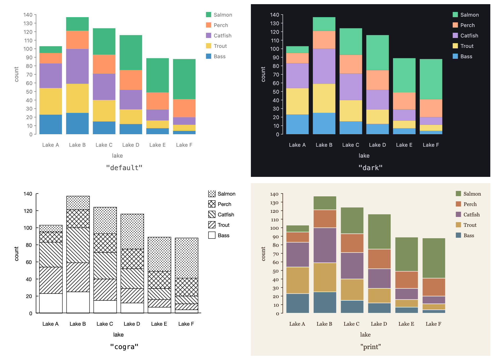
      </figure>
      <pre><code class="language-javascript">const dark = {
  color: {
    ink: "#c9c9d3",
    paper: "#16161d",
    muted: "#c9c9d3",
    category: Color.palette(["#5aa9e0", "#f5dd7c", "#b99ae0", "#ffac8a", "#5fd39b"]),
  },
};

const print = {
  color: {
    ink: "#3b2a1e",
    paper: "#f6f1e7",
    muted: "#3b2a1e",
    category: Color.palette(["#5b7a8c", "#c9a35a", "#8c6d8a", "#c27a54", "#7d8f5c"]),
  },
  text: { fontFamily: "Georgia, serif" },
  rect: { stroke: Color.paper, strokeWidth: 1 },
};

const cogra = {
  color: {
    ink: "black",
    paper: "white",
    muted: "black",
    category: Color.palette([
      "white",
      Pattern.lines(),
      Pattern.lines({ angle: -45 }),
      Pattern.cross(),
      Pattern.dots(),
    ]),
  },
  text: { fontFamily: "Helvetica, Arial, sans-serif" },
  rect: { stroke: Color.ink, strokeWidth: 1 },
  axis: { line: true, tick: { side: "inside", every: 20 } },
  legend: { swatch: { size: 14, stroke: Color.ink } },
};

// The chart is the same in all four pictures. Only `theme` changes.
chart(seafood, { theme: cogra })
  .flow(spread({ by: "lake", dir: "x" }), stack({ by: "species", dir: "y" }))
  .mark(rect({ h: "count", fill: "species" }));</code></pre>
      <ol>
        <li>
          <strong>A theme sets only what the user left out.</strong> An option
          written on a mark always wins. Next comes the nearest enclosing theme,
          then the ones outside it, then <code>defaultTheme</code>.
        </li>
        <li>
          <strong>The keys are names GoFish already has.</strong>
          <code>rect: { ... }</code> takes <code>rect</code>'s options and
          nothing else, so the reference page for <code>rect</code> is also the
          reference for what a theme can set on it. A named
          <code>createMark</code> component is keyed by its name.
        </li>
        <li>
          <strong>Chrome parts nest by role</strong>:
          <code>axis: { line, tick, label, title }</code>,
          <code>legend: { swatch, label, title }</code>,
          <code>label: { halo, background }</code>. The text parts take
          <code>text</code> options and inherit from the <code>text</code> rule,
          so <code>text: { fontFamily }</code> reaches every piece of text.
        </li>
        <li>
          <strong><code>theme</code> takes one theme or a list.</strong> Later
          entries win:
          <code>theme: [cogra, { text: { fontFamily: "Georgia" } }]</code>.
        </li>
      </ol>
    </article>

    <article class="card fork">
      <h3>Role colors, and the default theme as a value</h3>
      <pre><code class="language-javascript">// A part of defaultTheme. Every value is a constant in some source file today.
export const defaultTheme = {
  color: {
    ink: "black",
    paper: "white",
    accent: "#4190c5",
    muted: "gray",
    category: Color.palette([
      "#4190c5",
      "#f2cf57",
      "#a181c8",
      "#ff9666",
      "#43b780",
      "#d45e83",
    ]),
  },
  text: { fill: Color.ink, fontSize: 12, fontFamily: "system-ui, sans-serif" },
  rect: { fill: Color.accent, strokeWidth: 0 },
  axis: {
    line: false,
    tick: { stroke: Color.muted, length: 4, side: "outside" },
    label: { fill: Color.muted, fontSize: 10 },
    title: { fill: Color.muted, fontSize: 11 },
  },
  legend: { swatch: { size: 10 }, label: { fill: Color.muted, fontSize: 10 } },
  label: { fontSize: 11, halo: { color: Color.paper, width: 3 } },
};</code></pre>
      <p>
        <code>color</code> holds four role colors and the default ranges
        (<code>category</code>, and later <code>sequential</code> and
        <code>diverging</code>). A default refers to a role as
        <code>Color.ink</code>. That is why the dark theme above only sets
        <code>color</code>: text, ticks, halos and label contrast all follow.
      </p>
      <ul>
        <li>
          <strong
            >Every default becomes a value a user could have written.</strong
          >
          About forty constants now sit in <code>rect.tsx</code>,
          <code>text.tsx</code>, <code>axes/elaborate.tsx</code>,
          <code>legends/elaborate.tsx</code>, <code>labels/</code> and
          <code>color.ts</code>. They move into this one exported object.
        </li>
        <li>
          <strong>A scope that sets <code>paper</code> paints it</strong> behind
          its own box. Label halos and automatic label contrast read the nearest
          <code>paper</code>, which fixes #1216 (label colors assume a white
          page).
        </li>
        <li>
          <strong>A chart's own <code>color</code> option wins</strong> over the
          theme's ranges. This is the <code>theme</code> field that the scale
          ranges design (#1324) left for later.
        </li>
      </ul>
      <p class="note">
        The choice here is the set of names. <code>ink</code>,
        <code>paper</code> and <code>accent</code> are ggplot2 4.0's.
        <code>muted</code> is the role #641 wants for marks that are not
        emphasized. SwiftUI's names for the same idea are <code>primary</code>,
        <code>secondary</code> and <code>tint</code>. I picked the ggplot2 names
        because they say what the color is for on a page.
      </p>
    </article>

    <article class="card">
      <h3>Hard example: a theme on part of a figure</h3>
      <figure>
        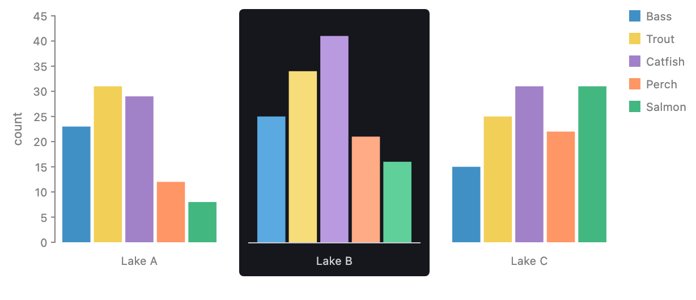
      </figure>
      <div class="codes">
        <div>
          <div class="label">Proposed, JavaScript</div>
          <pre><code class="language-javascript">const panel = (lake) =&gt;
  chart(seafood.filter((d) =&gt; d.lake === lake))
    .flow(spread({ by: "species", dir: "x" }))
    .mark(rect({ h: "count", fill: "species" }));

spread({ dir: "x", spacing: 36 }, [
  panel("Lake A"),
  layer({ theme: dark }, [panel("Lake B")]),
  panel("Lake C"),
]);</code></pre>
        </div>
        <div>
          <div class="label">Proposed, Python</div>
          <pre><code class="language-python">def panel(lake):
    return (
        chart([d for d in seafood if d["lake"] == lake])
        .flow(spread(by="species", dir="x"))
        .mark(rect(h="count", fill="species"))
    )


spread(
    [panel("Lake A"), layer([panel("Lake B")], theme=dark), panel("Lake C")],
    dir="x",
    spacing=36,
)</code></pre>
        </div>
      </div>
      <p>
        The middle panel's bars, baseline and label read the dark theme, and it
        paints its own paper. The other two never see it. A config object at the
        root of a chart cannot say this. A highlighted small multiple, an inset,
        and a diagram set inside a styled page all need it.
      </p>
    </article>

    <article class="card">
      <h3>The same keys style one axis</h3>
      <pre><code class="language-javascript">// The keys a theme sets are also the options of one axis.
chart(seafood, {
  axes: { y: { line: true, tick: { side: "inside" }, label: { fontSize: 12 } } },
});</code></pre>
      <p>
        Today an axis has no style options at all: its color, font, tick length
        and tick side are constants, and the Cogra pictures here needed edits to
        the rendered SVG. The parts a theme names (<code>line</code>,
        <code>tick</code>, <code>label</code>, <code>title</code>) become
        options of the axis, so a theme and a single axis are styled with one
        vocabulary. This is the first step of #1322.
      </p>
    </article>

    <article class="card fork">
      <h3>The other shapes a theme could take</h3>
      <div class="codes">
        <div>
          <div class="label alt">
            A config object with its own key list (Vega-Lite, ggplot2)
          </div>
          <pre><code class="language-javascript">chart(seafood, {
  theme: {
    font: "Georgia",
    background: "#f6f1e7",
    axis: {
      domainColor: "black",
      tickColor: "black",
      labelFontSize: 10,
      gridColor: "#ddd",
    },
    mark: { bar: { stroke: "black", strokeWidth: 1 } },
    range: { category: ["#5b7a8c", "#c9a35a", "#8c6d8a"] },
  },
});</code></pre>
        </div>
        <div>
          <div class="label alt">
            A rule list with selectors (Typst show, CSS, Penrose)
          </div>
          <pre><code class="language-javascript">chart(seafood, {
  theme: [
    set(rect, { stroke: "black", strokeWidth: 1 }),
    set(selectAll("bars"), { fill: Pattern.lines() }),
    show(axis, (a) =&gt; myAxis(a)),
    show(rect, (r) =&gt; layer([shadowOf(r), r])),
  ],
});</code></pre>
        </div>
      </div>
      <ul>
        <li>
          <strong>The config object</strong> is about as short as the
          recommended form for the four themes above. The difference is where
          the keys come from. Here they are a second vocabulary
          (<code>domainColor</code>, <code>labelFontSize</code>) that the
          library has to choose one at a time and grow forever, and it applies
          only at the root. Vega-Lite's axis config has about 150 keys.
        </li>
        <li>
          <strong>The rule list</strong> is the most open: a rule can match
          named marks, and a <code>show</code> rule can replace how something is
          drawn. It also brings matching, rule order and specificity, which
          users must learn and the wire format must carry, and
          <code>set</code> is a builtin in Python.
        </li>
      </ul>
      <p>
        The recommended form keeps one door open toward the rule list. Later, a
        key's value may be a function from the options to a node, such as
        <code>axis: (a) =&gt; myAxis(a)</code>. That is Typst's
        <code>show</code> without a selector language. It needs the axis and
        legend interfaces from #1279 first.
      </p>
      <details>
        <summary>What stays in user space: a component</summary>
        <pre><code class="language-javascript">const bar = (opts) =&gt; rect({ stroke: "black", strokeWidth: 1, ...opts });

chart(scores)
  .flow(spread({ by: "group", dir: "x" }))
  .mark(bar({ h: "value" }));</code></pre>
        <p>
          This is how the Bluefish stories keep a house style today, and it
          stays the right tool for a look that belongs to one kind of mark. It
          cannot reach the axes and legends, and it cannot reach marks inside a
          chart template someone else wrote. A theme reaches both.
        </p>
      </details>
    </article>
  </section>

  <!-- ============================ BACKGROUND ============================ -->
  <section class="tab" id="tab-background" hidden>
    <article class="card">
      <h3>Why this design</h3>
      <ul>
        <li>
          <strong>It desugars into the core.</strong> A pattern fill is
          <code>atop</code> over tiles. An effect is the
          <code>filter</code> that exists. A theme is the options the user did
          not write.
        </li>
        <li>
          <strong>A default is sugar, not a branch.</strong>
          <code>defaultTheme</code> gives every style default a spelling
          (<code>api-design.md</code>).
        </li>
        <li>
          <strong>One concept, one mechanism.</strong> Paints cover colors and
          patterns, and later gradients and images. A second channel would
          overlap them in the middle.
        </li>
        <li>
          <strong>Few new words.</strong> <code>Pattern</code>,
          <code>theme</code>, four role colors. Theme keys are existing names.
          Effect names are the design tools' names.
        </li>
        <li>
          <strong>Named kinds plus an open member.</strong> <code>lines</code>,
          <code>cross</code> and <code>dots</code> are exact cases of
          <code>Pattern.tile</code>.
        </li>
        <li>
          <strong>The same in Python.</strong> A theme is nested dicts with
          keyword names. Nothing in it is a function, so all of it crosses the
          wire.
        </li>
        <li>
          <strong>It is the context #222 asked for</strong>, and the layer that
          supplies ranges which #380 asked for, without the fixed record that
          <code>composition-not-enumeration.md</code> criticizes in the grammar
          of graphics.
        </li>
      </ul>
      <p>
        One earlier decision needs a careful reading. In #1267 you ruled that an
        operator must never change its children's state, and that a mark must
        not depend on the whole program. A theme does not change any option a
        mark was given. It answers "what does a missing option mean here", which
        a constant answers today. The answer comes from the nearest enclosing
        scope the user wrote, the way a name's does.
      </p>
    </article>

    <article class="card">
      <h3>Where a texture lives in other systems</h3>
      <div class="tablewrap">
        <table>
          <tr>
            <th>System</th>
            <th>Spelling</th>
            <th>A texture is</th>
          </tr>
          <tr>
            <td>SVG</td>
            <td><code>fill="url(#hatch)"</code>, a paint server</td>
            <td>a paint</td>
          </tr>
          <tr>
            <td>Typst</td>
            <td><code>rect(fill: tiling(size: (6pt, 6pt), line(..)))</code></td>
            <td>a paint</td>
          </tr>
          <tr>
            <td>SwiftUI, Swift Charts</td>
            <td>
              <code>.fill(ImagePaint(..))</code>.
              <code>chartForegroundStyleScale</code> maps data to any
              <code>ShapeStyle</code>
            </td>
            <td>a paint</td>
          </tr>
          <tr>
            <td>Figma</td>
            <td>Fill types: Solid, Gradient, Pattern, Image</td>
            <td>a paint</td>
          </tr>
          <tr>
            <td>matplotlib</td>
            <td><code>ax.bar(x, h, hatch="//")</code></td>
            <td>a paint property</td>
          </tr>
          <tr>
            <td>Highcharts</td>
            <td><code>color: { pattern: { path, width, height } }</code></td>
            <td>a paint</td>
          </tr>
          <tr>
            <td>rough.js, Excalidraw</td>
            <td><code>fill: "red", fillStyle: "hachure"</code></td>
            <td>a second option beside fill</td>
          </tr>
          <tr>
            <td>ggpattern</td>
            <td>
              <code
                >geom_col_pattern(aes(pattern = sex, pattern_fill =
                species))</code
              >
            </td>
            <td>channels with scales (15 of them)</td>
          </tr>
          <tr>
            <td>Plotly Express</td>
            <td>
              <code>px.bar(df, color="nation", pattern_shape="nation")</code>
            </td>
            <td>a channel</td>
          </tr>
          <tr>
            <td>ECharts</td>
            <td><code>aria: { decal: { show: true } }</code></td>
            <td>an overlay switched on per chart</td>
          </tr>
          <tr>
            <td>Vega-Lite, Observable Plot</td>
            <td>none (vega#1372 and plot#903 are open)</td>
            <td></td>
          </tr>
        </table>
      </div>
    </article>

    <article class="card">
      <h3>What a theme is in other systems</h3>
      <div class="tablewrap">
        <table>
          <tr>
            <th>Mechanism</th>
            <th>Examples</th>
            <th>Restyles parts the library did not list</th>
          </tr>
          <tr>
            <td>Global defaults</td>
            <td>
              matplotlib <code>rcParams</code>, <code>Chart.defaults</code>,
              <code>Highcharts.setOptions</code>
            </td>
            <td>no</td>
          </tr>
          <tr>
            <td>Config object, fixed keys</td>
            <td>
              Vega-Lite <code>config</code>, ggplot2
              <code>theme(axis.text = element_text())</code>, Plotly templates,
              MUI <code>styleOverrides</code>
            </td>
            <td>no</td>
          </tr>
          <tr>
            <td>Scoped inherited values</td>
            <td>
              Typst <code>set text(font: "X")</code>, SwiftUI
              <code>.font()</code> and <code>.tint()</code>, CeTZ
              <code>set-style(rect: (fill: blue))</code>, Compose locals, TikZ
              <code>scope</code>
            </td>
            <td>yes, any element's own options</td>
          </tr>
          <tr>
            <td>Rules that match elements</td>
            <td>
              Typst <code>show heading: it =&gt; ..</code>, CSS with
              <code>@scope</code>, Penrose style programs
            </td>
            <td>yes</td>
          </tr>
          <tr>
            <td>Component replacement</td>
            <td>shadcn/ui, SwiftUI <code>ButtonStyle</code></td>
            <td>yes</td>
          </tr>
          <tr>
            <td>Role values</td>
            <td>
              CSS custom properties, SwiftUI <code>.primary</code>, ggplot2 4.0
              <code>ink</code>, <code>paper</code>, <code>accent</code> with
              <code>from_theme()</code>
            </td>
            <td></td>
          </tr>
        </table>
      </div>
      <p>
        The recommended theme is the third row plus the last. CeTZ is the
        closest single precedent: <code>set-style(rect: (fill: blue))</code> is
        a scoped dictionary keyed by element type, with the element's own
        parameters as keys.
      </p>
    </article>

    <article class="card">
      <h3>Earlier attempts in this repo</h3>
      <ul>
        <li>
          <code>src/ast/texture/temp_filter.tsx</code>: 722 lines of
          hand-written SVG filters from the first commit (drop shadow,
          watercolor, moss, felt, glass, paper). Nothing imports it.
        </li>
        <li>
          <code>src/tests/fishRibbonChartTextured.tsx</code> and two more: hatch
          and dot pattern defs used as
          <code>fill: "url(#diagonalLeftFill)"</code>. Unreferenced. Redrawn on
          the Patterns tab.
        </li>
        <li>
          #222, theming: a context that components read defaults from, nested
          anywhere, like SwiftUI, CSS or Typst. No code.
        </li>
        <li>
          #380, themes and scales: a theme supplies the ranges and type styles
          that scales and marks draw from.
        </li>
        <li>
          PR #1044, parked: a paper cutout stacked bar, with
          <code>filter</code> as a per-row channel and filters passed through
          <code>defs</code>.
        </li>
        <li>
          #1196: pen, pencil and watercolor effects that keep the layout exact.
        </li>
        <li>
          PR #1287, merged: the <code>filter</code> option and
          <code>Filter</code> family, <code>blendMode</code>,
          <code>.hidden()</code>, the region operators.
        </li>
        <li>
          #1324, scale ranges: signed off, not built. Its
          <code>theme</code> field was put off until there were more examples.
        </li>
        <li>
          #1338, PR #1336, #1385, PR #1366: raw filter strings fail in Safari;
          filters lowered to SVG defs; the family may be renamed
          <code>Effect</code>.
        </li>
        <li>
          Also touched: #1322 legends and grid lines, #1279 axis and legend
          interfaces, #1216 label colors on a non-white page, #641 emphasis,
          #113 New York Times styles, #1101 custom strategies.
        </li>
      </ul>
    </article>

    <article class="card">
      <h3>What changes in the existing API</h3>
      <ul>
        <li>
          <code>fill</code> and <code>stroke</code> accept a
          <code>Pattern</code> on every mark that has them.
          <code>Color.palette</code> accepts patterns as entries.
        </li>
        <li>
          <code>filter</code> accepts a list. Raw CSS filter strings go once the
          four members exist.
        </li>
        <li>
          <code>chart</code> and <code>layer</code> gain <code>theme</code>.
          <code>Color</code> gains four role colors. Axis and legend parts gain
          style options.
        </li>
        <li>
          <code>fontSize</code>, <code>fontFamily</code>,
          <code>fontWeight</code> and <code>fontStyle</code> on
          <code>text</code> and on label options are a prefix written into
          names. By the nesting rule they should be
          <code>font: { size, family, weight, style }</code>, and a theme then
          sets a font as one value. I would make that change with the theme
          work. <code>strokeWidth</code> and <code>strokeDasharray</code> have
          the same shape and touch nearly every story, so that one should be its
          own issue.
        </li>
        <li>
          <code>.render(el, { defs })</code> stays as the JavaScript escape
          hatch.
        </li>
      </ul>
      <details>
        <summary>Smaller choices, recorded for later sessions</summary>
        <ul>
          <li>
            Shared type roles (title, label and caption sizes across chrome
            parts, as <code>graphic-design.md</code> asks) wait for a second
            round. In this round each chrome part has its own text options.
          </li>
          <li>
            User-defined role colors beyond the four are not in this round.
          </li>
          <li>
            A default rect's stroke copies its fill today. With a pattern fill
            the stroke takes the pattern's <code>color</code>.
          </li>
          <li>
            A theme's font has to be known before layout, because text is
            measured during layout. So a theme is resolved when the tree is
            built, not when it is painted.
          </li>
          <li>
            A whole-figure effect is written on the chart or layer, not inside
            the theme. <code>filter</code> is not inherited, and a rule under
            <code>layer</code> would filter every nested layer again.
          </li>
          <li>
            An order for building it: role colors and
            <code>defaultTheme</code> first (no visible change), then
            <code>theme</code> on chart and layer, then axis and legend part
            options, then <code>Pattern</code>, then the four filters.
          </li>
        </ul>
      </details>
    </article>
  </section>
</main>

<script>
  (function () {
    var names = ["overview", "patterns", "effects", "themes", "background"];
    function show() {
      var want = (location.hash || "").replace("#", "");
      if (names.indexOf(want) < 0) want = "overview";
      names.forEach(function (n) {
        document.getElementById("tab-" + n).hidden = n !== want;
        var a = document.querySelector('nav.tabs a[data-tab="' + n + '"]');
        if (n === want) a.setAttribute("aria-current", "page");
        else a.removeAttribute("aria-current");
      });
    }
    window.addEventListener("hashchange", function () {
      show();
      window.scrollTo(0, 0);
    });
    show();
    document.querySelectorAll("pre code").forEach(function (el) {
      if (window.hljs) hljs.highlightElement(el);
    });
  })();
</script>
